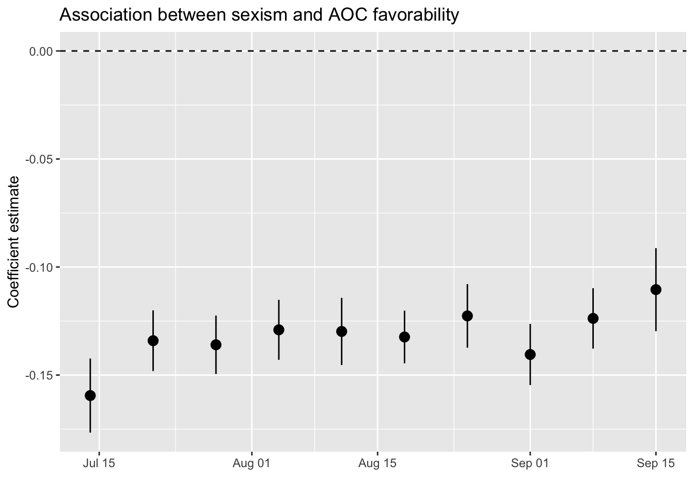
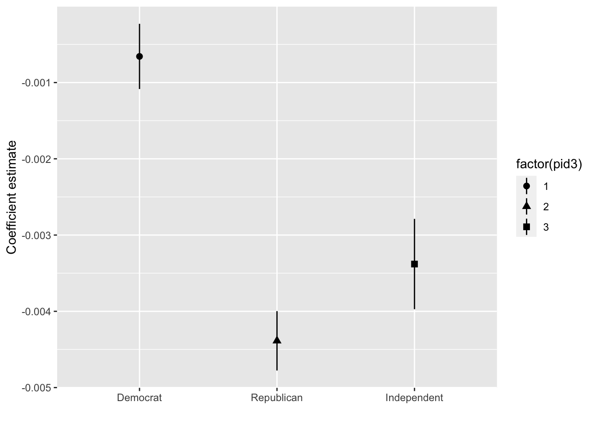
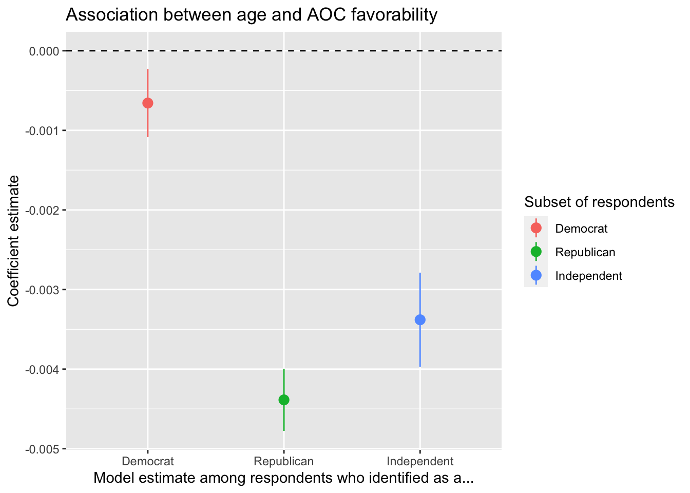
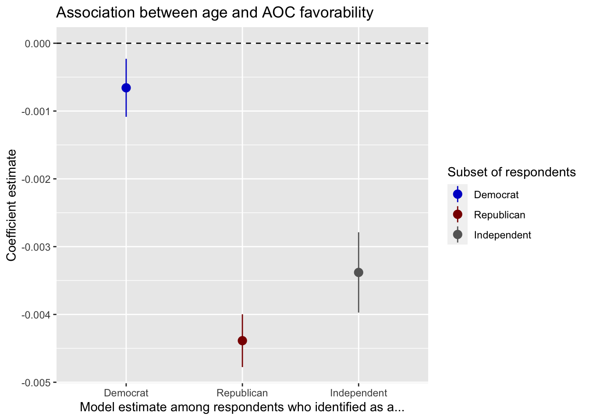
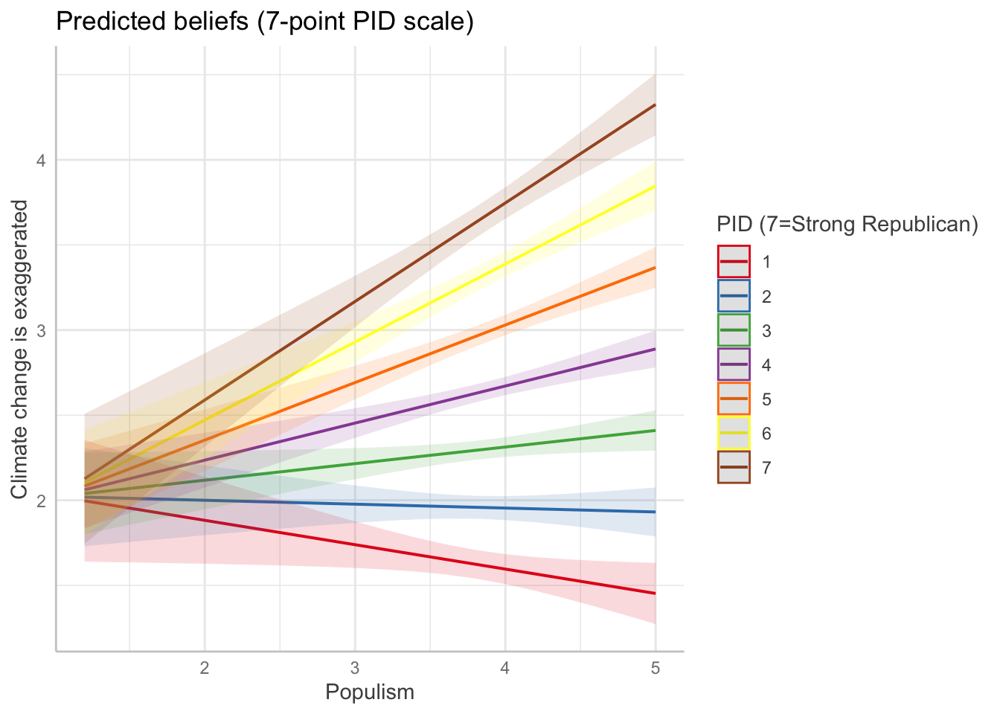
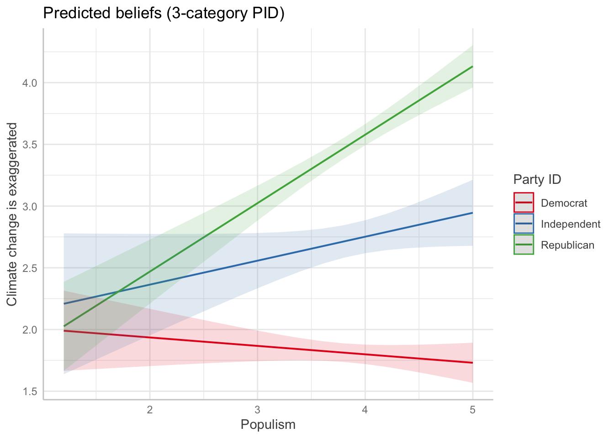
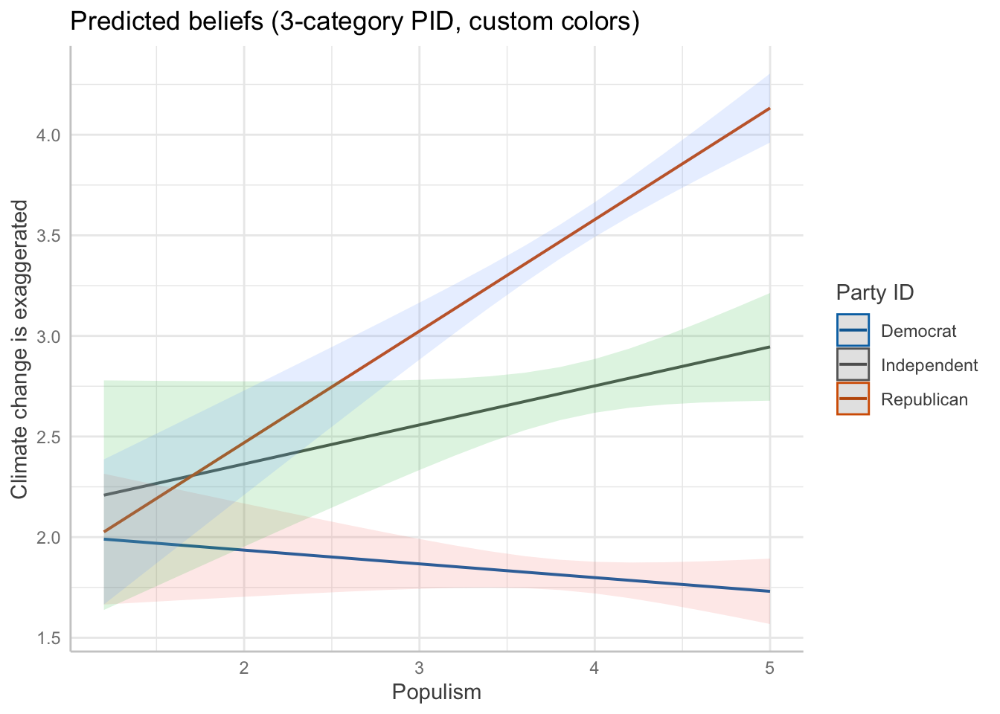
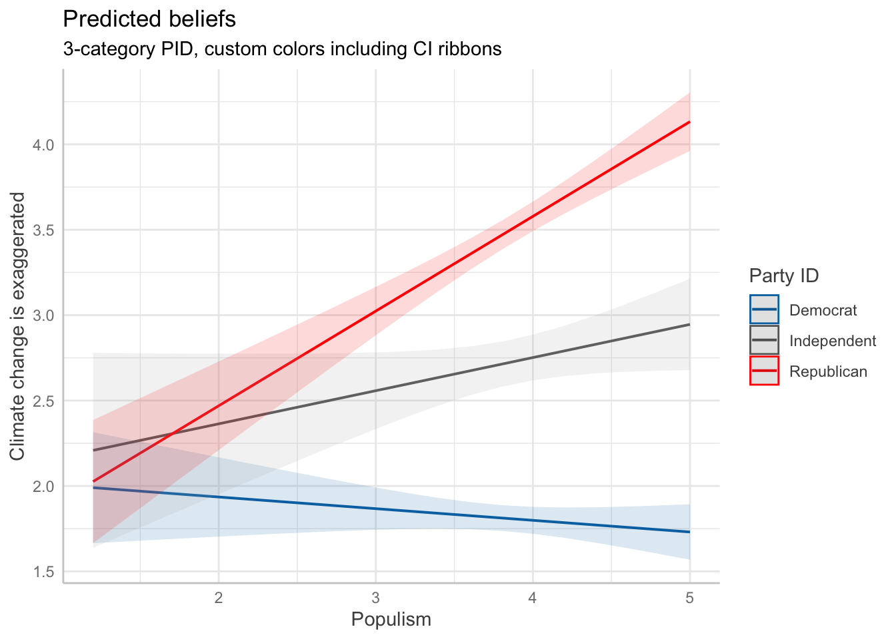

Code
library(broom)A more accurate title, of course, would be “visualizing outputs from statistical models”.
We’ll be using this package to help us out:
library(broom)(And in the second section will use ggeffects to make our life even easier.)
# Read in Nationscape survey data:
library(tidyverse)
library(labelled)
a <- readRDS("data/nationscape/Nationscape_first10waves.rds")We estimate 10 separate model, aka “rolling regressions”.
We run one model for each value of week, and create a tibble thanks to the tidy()function:
a %>% filter(
!is.na(aoc_Favorable),
!is.na(gender_att3_by1SD)) %>%
group_by(week) %>%
do(broom::tidy(lm(aoc_Favorable ~
gender_att3_by1SD +
age + college_grad +
White + Black + Hispanic, data = .))) %>%
# Which coefficient we wish to pull:
filter(term == "gender_att3_by1SD") %>%
ggplot(aes(x=week,y=estimate,
ymax = estimate + 1.96*std.error,
ymin = estimate - 1.96*std.error)) +
geom_pointrange(position = position_dodge(width = .45), size=.6) + labs(x="",y="Coefficient estimate",
color="Subset of respondents") +
ggtitle("Association between sexism and AOC favorability") +
geom_hline(yintercept=0, linetype=2) 
It seems that the correlation between sexism and (lower) favorability of AOC is quite stable.
aoc_Favorable <- a %>% filter(
!is.na(aoc_Favorable),
!is.na(gender_att3_by1SD)) %>%
group_by(pid3) %>%
do(broom::tidy(lm(aoc_Favorable ~
gender_att3_by1SD +
age + college_grad +
White + Black + Hispanic, data = .)))We can now plot any set of coefficients, of course.
Let us try to see whether age correlates negatively with AOC’s favorability, as we might perhaps suspect:
aoc_Favorable %>% filter(pid3 <= 3 & term == "age") %>%
ggplot(aes(x=as_factor(pid3),y=estimate,
ymax = estimate + 1.96*std.error,
ymin = estimate - 1.96*std.error,
shape = factor(pid3))) +
geom_pointrange() + labs(x="",y="Coefficient estimate",color="")
Let’s improve the design a little bit:
aoc_Favorable %>% filter(pid3 <= 3,term == "age") %>%
ggplot(aes(x=as_factor(pid3),y=estimate,
ymax = estimate + 1.96*std.error,
ymin = estimate - 1.96*std.error,color=as_factor(pid3))) +
geom_pointrange(position = position_dodge(width = .45), size=.6) + labs(x="Model estimate among respondents who identified as a...",y="Coefficient estimate",
color="Subset of respondents") +
ggtitle("Association between age and AOC favorability") +
geom_hline(yintercept=0, linetype=2) 
Need to fix the party colors:
aoc_Favorable %>% filter(pid3 <= 3,term == "age") %>%
ggplot(aes(x=as_factor(pid3),y=estimate,
ymax = estimate + 1.96*std.error,
ymin = estimate - 1.96*std.error,color=as_factor(pid3))) +
geom_pointrange(position = position_dodge(width = .45), size=.6) + labs(x="Model estimate among respondents who identified as a...",y="Coefficient estimate",
color="Subset of respondents") +
ggtitle("Association between age and AOC favorability") +
geom_hline(yintercept=0, linetype=2) +
scale_color_manual(values = c("blue3","darkred","grey40"))
ggeffects if your friendlibrary(tidyverse)
library(haven)
library(labelled)
source("data/ajps2021/0_ajps_recode.R")We now turn again to the dataset posted by Uscinski et al. (2021). We now turn again to the dataset posted by Uscinski et al. (2021).
The code below estimates four regression models to examine how party identification (PID) interacts with populism and conspiracy thinking in predicting attitudes about climate and Trump favorability.
First, we fit models using the original 7-point party ID scale:
int1 <- lm(cexaggerate ~ pid*pop_Index, data=d3)
int2 <- lm(trumpft ~ pid*pop_Index, data=d3)
int3 <- lm(trumpft ~ pid*consp_Index, data=d3)
int4 <- lm(trumpft ~ pid*goodevil + consp_Index + pop_Index, data=d3)We use ggeffects to plot predicted values from the first model, showing how the effect of populism on the belief that climate change is exaggerated varies across the 7-point party-ID scale:
ggeffects::ggeffect(int1, terms=c("pop_Index","pid")) %>% plot() +
labs(y="Climate change is exaggerated",
color="PID (7=Strong Republican)",
x="Populism",
title = "Predicted beliefs (7-point PID scale)")
To make the visualization clearer, we can also recode the 7-point party ID scale into three categories:
# Recode PID into 3 categories
d3 <- d3 %>%
mutate(pid3cat = case_when(
pid >= 1 & pid <= 3 ~ "Democrat",
pid == 4 ~ "Independent",
pid >= 5 & pid <= 7 ~ "Republican"
) %>%
factor(levels = c("Democrat", "Independent", "Republican")))
int1_3cat <- lm(cexaggerate ~ pid3cat*pop_Index, data=d3)
int2_3cat <- lm(trumpft ~ pid3cat*pop_Index, data=d3)
int3_3cat <- lm(trumpft ~ pid3cat*consp_Index, data=d3)
int4_3cat <- lm(trumpft ~ pid3cat*goodevil + consp_Index + pop_Index, data=d3)Now we plot the same relationship using the 3-category party ID variable:
ggeffects::ggeffect(int1_3cat, terms=c("pop_Index","pid3cat")) %>% plot() +
labs(y="Climate change is exaggerated",
color="Party ID",
x="Populism",
title = "Predicted beliefs (3-category PID)")
Customize the colors of the 3 lines: Democrats = blue, Independents = gray, Republicans = red
ggeffects::ggeffect(int1_3cat, terms=c("pop_Index","pid3cat")) %>%
plot() +
scale_color_manual(values = c(
"Democrat" = "#0072B2", # blue
"Independent" = "gray40", # gray
"Republican" = "#D55E00" # red
)) +
labs(y="Climate change is exaggerated",
color="Party ID",
x="Populism",
title = "Predicted beliefs (3-category PID, custom colors)")
To ensure that both the lines and the confidence interval ribbons convey party ID with the same custom colors, we should also specify scale_fill_manual() in addition to scale_color_manual(). The fill controls the color of the confidence interval bands, which default to a lighter version of the respective line color. By matching the color and fill, the plot becomes more consistent and clear.
Here’s how to do it:
ggeffects::ggeffect(int1_3cat, terms=c("pop_Index","pid3cat")) %>%
plot() +
scale_color_manual(values = c(
"Democrat" = "#0072B2", # blue
"Independent" = "gray40", # gray
"Republican" = "#FF0000" # red
)) +
scale_fill_manual(values = c(
"Democrat" = "#0072B2",
"Independent" = "gray70",
"Republican" = "#FF0000"
)) +
labs(y="Climate change is exaggerated",
color="Party ID",
fill="Party ID",
x="Populism",
title = "Predicted beliefs",
subtitle = "3-category PID, custom colors including CI ribbons")